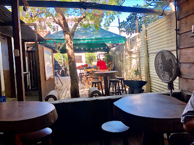
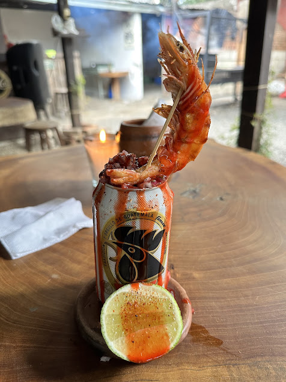
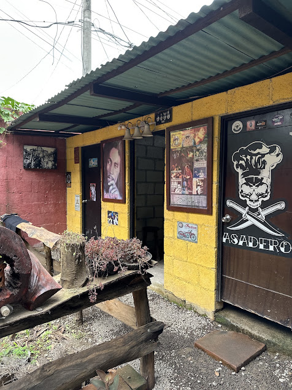

Villa Canales · Guatemala
Aquí la mesa empieza con fuego.
Parrilla, mariscos y cocina creativa en un rincón rústico para comer sin prisa, brindar y quedarse un rato más.
La experiencia
Madera, humo y una sobremesa sin reloj.
Asadero no busca sentirse perfecto: busca sentirse vivo. Mesas de madera, cocina abierta, platos al centro y ese aroma a brasa que anuncia que algo bueno está por llegar.
Seguir el día a día en Instagram

Sabores del Asadero
Lo que hace que quieras volver.
Una mirada honesta a lo que llega a la mesa: preparaciones al fuego, frescura y algo frío para acompañar.

Ven a la mesa
Nos vemos en Villa Canales.
Consultando horario…